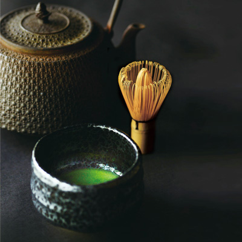
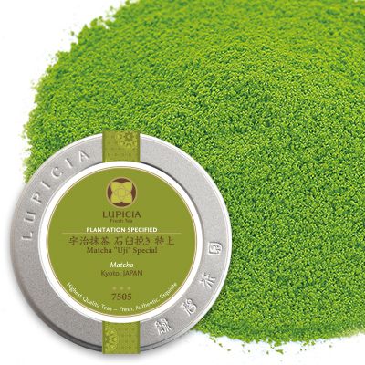

우지말차 맷돌갈이 특상
宇治抹茶 石臼挽き 特上



長い歴史を誇る抹茶の名産地京都・宇治から。
京都・宇治産の高品質抹茶を職人が特別に合組（ごうぐみ）し、石臼で挽いて仕上げた逸品。渋みと甘みが見事に重なり合う碧色が美しい抹茶です。
宇治抹茶 石臼挽き 特上は、深みとうま味が重なった奥深い味わい、まろやかなコクと軽やかに鼻腔を抜ける香り立ちが特徴の抹茶です。
京都・宇治産の高品質茶葉を茶師が厳選したものを一定期間蔵の中で熟成させ、合組（ごうぐみ・ブレンド）をし、石臼で挽いています。
蔵の中で熟成させることにより、味わいに深みが増し、石臼で挽く事により一層まろやかな甘みが感じられる、まさに職人の技の光る逸品です。
色鮮やかな水色もさることながら、どこか清涼感のある抹茶の香りをお楽しみください。
【産地・農園特定の抹茶について】
近年、製菓用や輸出用の比較的価格の安い抹茶が生産量を伸ばしていますが、長い伝統を誇る手摘み・石臼挽きの上級抹茶を丁寧に茶筅で立てていただく満足感は何物にも代えがたいものがあります。
手間暇かけた覆い下栽培（※）と肥培管理、一つ一つ丁寧に手摘みされた葉を石臼で時間をかけて挽いたその風味は、香りが圧倒的に甘く濃厚で味わいには長い余韻と奥行きがあり、たった一杯でこんなにも満ち足りるお茶は世界でも類を見ません。
機械で粉砕した抹茶や、日本以外の国で作られたものとは風味に明確な違いがあり、その上質な風味がニューヨークなど海外でも認識され、ブームを巻き起こしつつあります。
【覆い下栽培】日射光を遮って新芽を生育させる栽培法。
藁や葭簀（よしず）、寒冷紗（多くは黒い化繊）を使用して、玉露や碾茶（てんちゃ・粉砕前の抹茶）の場合は最終遮光度95-98%で約20日間、一番茶のかぶせ茶の場合は60-75%で7-10日間程度長期に渡って日光を遮って栽培する方法。被覆だけでなく、一般の茶園管理・肥培条件等も煎茶用の茶園よりはるかに入念に行われることが多い。
- 상품번호
- 7505
- 상품 형태
- 20g 쁘띠캔입
- 가격
- 3,200円
- 판매 안내
- ※상미기한：제조일로부터반년
- 원재료
- 緑茶※商品の改定などにより、商品パッケージの記載内容が上記内容と一部異なる場合がございます。
- 원산지
- 日本（茶）※商品の改定などにより、商品パッケージの記載内容が上記内容と一部異なる場合がございます。